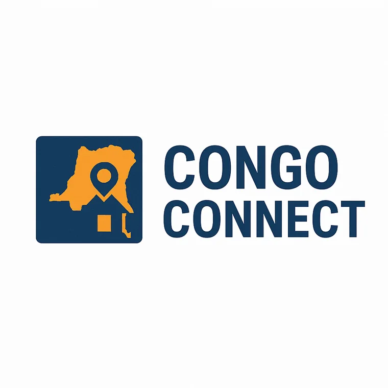

Home & Apartment Construction
Define project scope, coordinate planning conversations, and track construction milestones for residential projects.

WHAT WE OFFER
From early questions about land to the final handover, our proposed services aim to make remote projects easier to understand and manage.
Define project scope, coordinate planning conversations, and track construction milestones for residential projects.
Organize local due diligence requests and help clients understand which property details and documents require professional verification.
Support the planning and monitoring of repairs, upgrades, and remodeling work on existing properties.
Coordinate status reports, schedule check-ins, materials tracking, and photo or video progress documentation.
Important: Congo Connect is a student business concept. Services described here are proposed, not a guarantee of currently available professional or legal services. Independent legal verification remains important for property transactions.